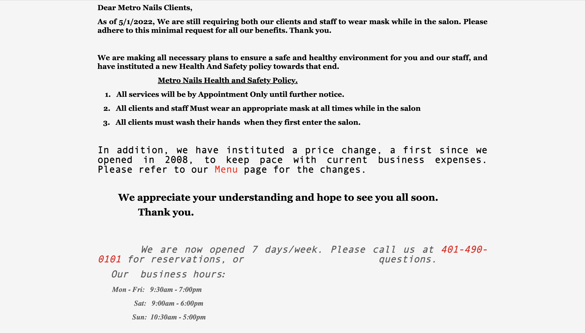
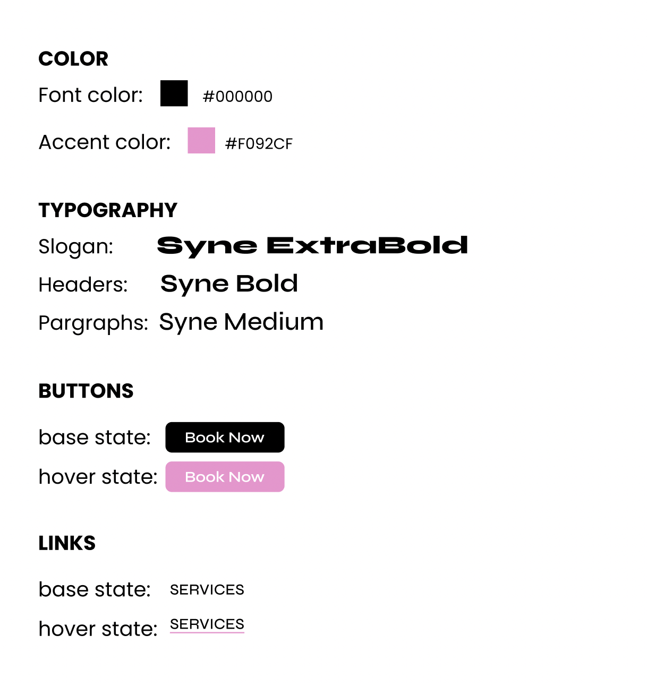

Responsive Redesign Project
For this project, I practiced the workflow of redesigning a website for a local Providence nail salon, Metro Nails, because it appeared outdated and had significant usability issues. It was great to design a solution for an establishment I reguarly visit!
I. Identifying Usability Problems
Click here to visit the Metro Nails Site



I assessed the usability of this website in terms of usability (e.g., including efficiency), learnability, and memorability, and its conceptual model.
Here are the problems I identified:
- Does not follow modern real-world conventions for nail salon websites (ex: no booking options)
- There is a lack of the brand's identity
- Nav-bar doesn’t link to the most valuable information options for users
- Information hierarchy does not follow a natural and logical order
- There is information that is irrelevant and repeated (ex: links to review sites)
- The images on the bottom are poorly laid-out and appear outdated
- Font styles and color vary too much throughout the page in an unclear way
II. Accessibility Issues
In addition to analyzing the website on the aforementioned usability guidelines, I used WebAIM WAVE to detect accessibility problems:
- Several areas of very low contrast between background and text
- Lack of alt-text for images
III. Low-fidelity Wireframing
I created wireframes to solve the problems I identified. The mobile and tablet are the same because I wanted a seamless experience between the two smaller screen sizes.
IV. Visual Design Style Guide
I created a create a visual design style guide in Figma that displays the main colors, typography, and reusable components’ different states.

V. High-Fidelity Prototypes
Using Figma, I created a total of 3 high-fidelity prototypes of the salon's home page, one for desktop, tablet, and mobile.
VI. Responsive Redesign
Using the final high-fidelity prototypes, I created the page using HTML and CSS! I was able to acheive my accent color appearing when hovering
over buttons and links. Also, my nav-bar collapses into a hamburger menu icon when the screen size gets smaller. The text also descreases in size for smaller screen sizes,
and the contents dispalyed in rows shifts to being displayed in columns. I used this Youtube tutorial to help me with my code:
Link to Easy Tutorial's video